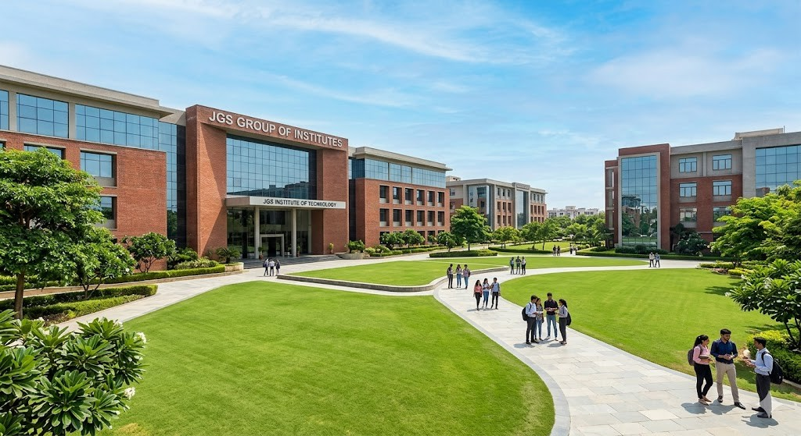
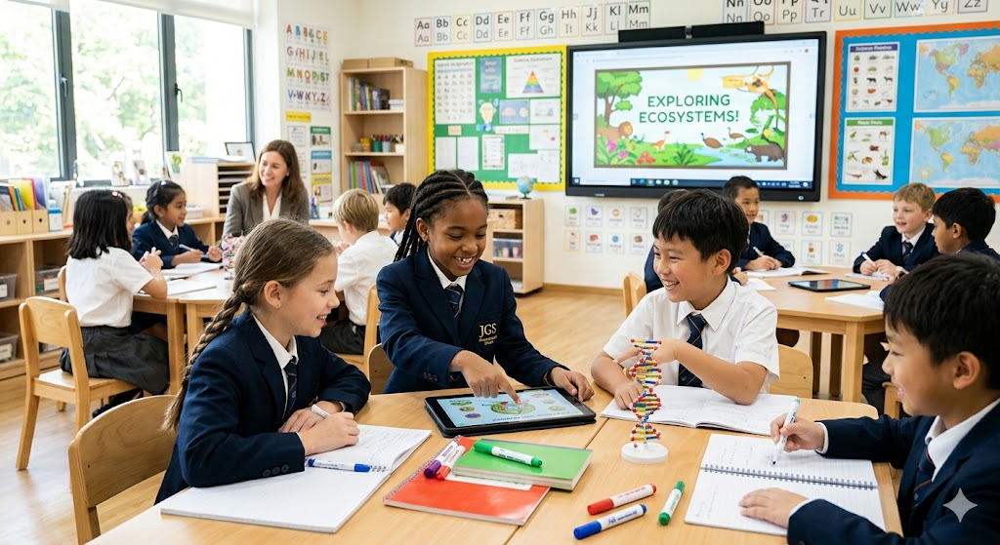
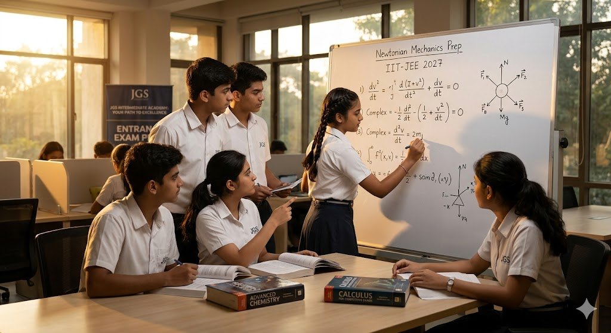

Labs


Facility Support
AI&ML, CS, ECE, EEE, Mechanical, and Civil labs support experiments, records, mini projects, and final-year work.
Reference books, previous papers, project reports, journals, and quiet study spaces support exam preparation.
Guest lectures, placement training, parent meetings, technical talks, workshops, and student presentations are conducted here.
Outdoor spaces support games, cultural activities, student clubs, annual day practice, and wellness activities.

Foundational learning spaces for KG to Class 10 with board exam preparation, discipline, and activity-based learning.

Physics, chemistry, biology, and computer lab support for Class 11 and 12 practical work and board records.